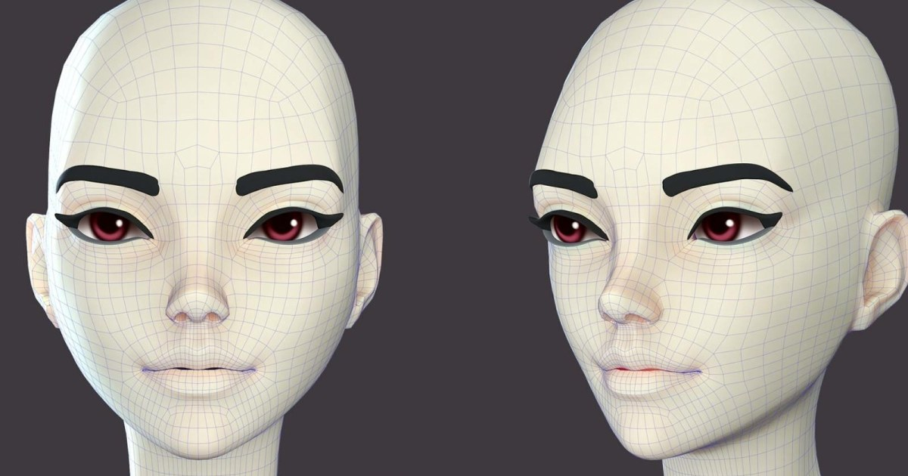

01
3D 動作／Rig：Learn Com…ter Heads 的製作重點
這篇內容聚焦 動畫 的教學／製作流程，內容型態包含 移動循環、教學。對 Animation 流程，先看它實際改變哪些操作、交換或輸出步驟，再決定是否納入現有 SOP。

動畫
★★★★★
完整分析
技術／流程變更
「3D 動作／Rig：Learn Com…ter Heads 的製作重點」以 動畫 的教學／流程為主，可拆成輸入、操作、人工修正與輸出幾個階段來看。
Production 影響
針對「3D 動作／Rig：Learn Com…ter Heads 的製作重點」，Animation 團隊可把內容拆成 SOP、review checklist 或新人訓練素材，再與現有工具流程逐步對照。
導入測試與限制
若要把「3D 動作／Rig：Learn Com…ter Heads 的製作重點」納入 production，仍需用實際 DCC／引擎版本、代表性資產與目標輸出驗證；單一案例、展示或宣傳頁不能直接當成固定工時、品質或效能收益。
BRIEF｜來源已驗證；證據深度較有限，完整分析會明確區分已知資訊與待驗證事項。